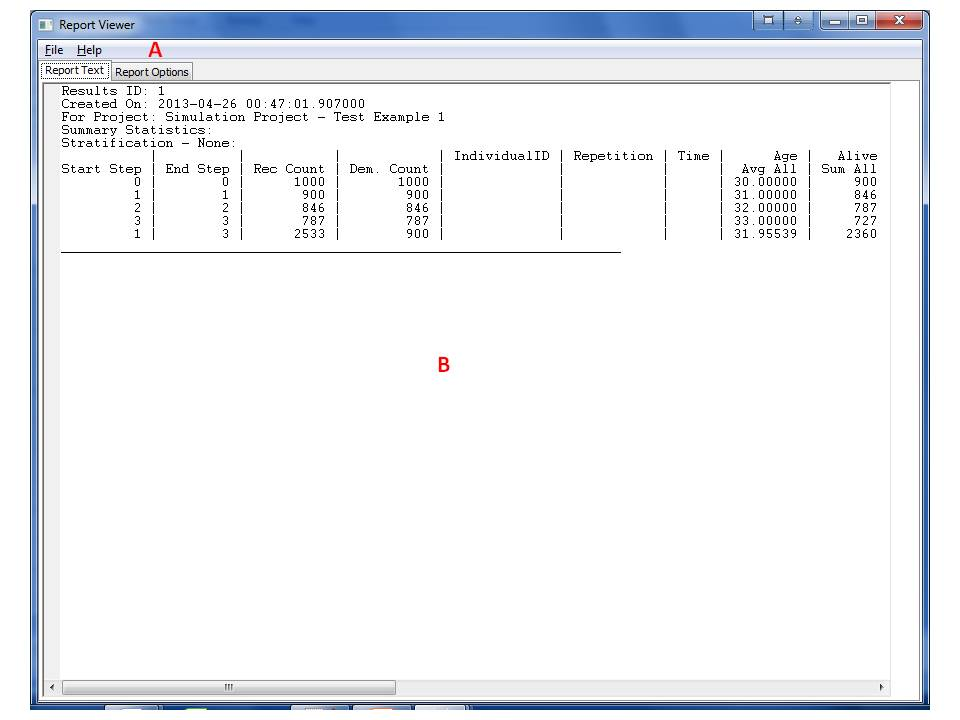
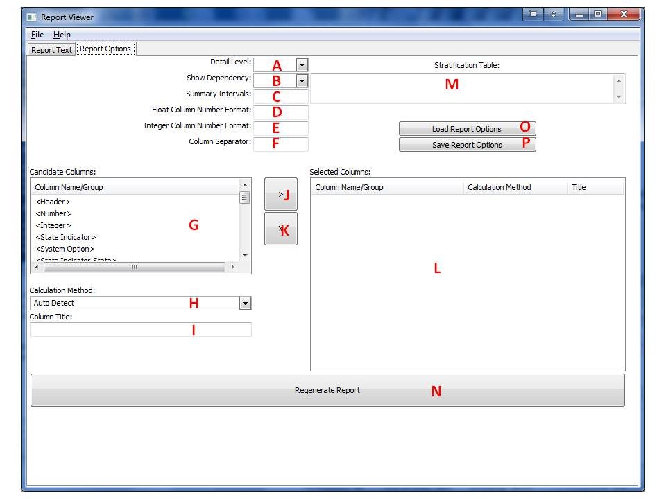

13 Reports
The reports option provides users with the ability to view the information in textual form. Reports can include information about parameters, states, studies/models, transitions, population sets, projects, and results.
13.1 Generating a Report
Reports are generated in the context of the topmost open window. For example a report generated from the Model window will generate a report describing a Model and a report generated from the project window will describe the project.
To generate a report for a single entry in any form:
- Select the row/record of interest.
- From the menu bar at the top of the form, select File.
- From the File menu select Single Report.
To generate a report regarding all the records in the form:
- From the menu bar at the top of the form, select File.
- From the File menu select Report All.
Either of these actions will open the Report Viewer form with the generated report:

The user can view the report in the text area (B). Note that the reports are usually very wide and may not fit the screen and using the scroll bars to view the results may be necessary.
13.2 Saving the Report File
To save the report as text:
- From the menu bar at the top of the Report viewer form, select File.
- From the File menu select Save to save under a default file name. Select Save As to allow the user to modify filename/path.
Also note that portions of the report can be highlighted and copied into the clipboard to be pasted into other applications.
13.3 Changing Report Options
The report that first appears uses default options defined by the system. The context/formatting of most reports can be controlled by the user. Specifically the simulation results report is very extensive and has many options, whereas other reports use the Detail Level option.
To change report options, from the report viewer form select the Report Option tab (A). The following options form will replace the result tab:

The user can now change report options using according to the following instructions:
- Choose the appropriate Details Level from the drop box (A), or leave blank for a default of 0. This report option affects the reports for most entities. The higher the number the more details will be provided on the entity. In some cases, higher details level will drill down into other entities associated with the reported entity. Higher Detail Level will indicate more levels of drilling down.
- Choose the appropriate Show Dependency from the drop box (B), or leave blank for a default of No. This report option affects the reports for most entities. If Yes is selected, the report will contain additional information regarding dependencies between entities, such as states and the associated state indicators etc. In addition, some expressions will be explained in a more readable fashion to the user.
- Define an appropriate Summary Intervals (C) for a simulation results report, or leave blank for the default. This option defines a list of simulation step intervals for summary statistics in the report enclosed in brackets [a,b,c…]. Summary interval members can be defined as an integer such as 2 meaning a summary will be generated for every 2 simulation steps. Alternatively, a summary interval member can be specified by a nested set of [] in a [min,max] format such as [1,3] meaning the interval starts at simulation step 1 and ends at simulation step 3. The number 0 refers to the initial condition. Also if the number 0 is defined as a single member at the beginning of the list, this means simulation steps will be counted from the initial state rather from the first simulation step. Note the difference between 0 as a number compared to the range [0,0]. The first one means that counting time intervals starts at 0 instead or at the first simulation step, whereas the latter means to report the initial condition as a summary interval. Finally, the maximal interval of [0/1, Max] is always automatically included by the system at the end of the list. Where Max stands for the maximal number of simulation steps as defined in the project and 0/1 is dictated by the appearance of 0 in the list. If no specification is made, then the following default results are presented: each cycle, sequential five-cycle interval, sequential 10-cycle intervals and a summary of the entire range of cycles. To help understand these concepts, here are a few examples:
- When there are two nonzero entries [a,b], then first each sequential 'a' cycles will be summarized followed by each sequential 'b' cycles. For example, the list [1,2] will mean generating summaries for every year starting at 1, i.e. equivalent to [1,1],[2,2],[3,3] etc. and then generating all summary intervals 2 years apart, i.e. equivalent to [1,2],[3,4],[4,6] etc. Finally the system will add the overall interval of [1, Max].
- When an interval is embedded in a second set of [] such as [[a,b]], then the interval of cycle 'a' to 'b' will be summarized. For example, the list [[1,2]] will generate a single summary interval [1,2] and the system will add the overall interval of [1, Max].
- When zero is specified, it modifies the summaries to start from cycle zero (the initial state. For example, the list [0,2] will generate the following summary intervals two years apart [0,1], [2,3],[4,5] etc. and then the system will add the overall interval of [0, Max].
- The list [[0,2]] will generate a single summary interval [0,2] and the system will add the overall interval of [1, Max].
- The number 1 alone will be recognized by the system as [1] meaning a summary interval for each simulation step i.e. [1,1] ,[2,2],[3,3] etc. and the system will add the overall interval of [1, Max].
- Define appropriate Float Column Number Format (D) and Integer Column Number Format (E) for a report of the simulation results, or leave blank for the default. If one of these options is defined, the other one is required as well. These two options define how numbers will look at the summary section of the report. The format is based on the format available in the Python Language as defined in
http://docs.python.org/lib/typesseq-strings.html
- Define an appropriate Column Separator (F) for a simulation results report or leave blank for the default of '|'. This allows the user to define the character that separates columns. This is useful when importing the report text to a spreadsheet as this allows automatic separation of columns.
- Define columns of interest to display in the simulation results report. This involves several operations as follows:
- Select a column/group from the candidate group list (G). Column names are parameters that exist in the result set and can be selected by name. This includes all state indicators of all types and all parameters defined in the initial population set and in the simulation rules. For ease of selecting entire groups of columns, these parameters are grouped by the system in several groups such as <Number> or <State Indicator>. A user can select a column or a group to allow flexibility. Note that the Group <Heading> has special treatment as it creates the header for the report.
- Select the calculation method to apply to the column from the drop box (H) or leave it as Auto Detect. In most cases the system will be able to deduce the desired calculation method from the list, which is the default. Yet the user can force a specific calculation method overriding the system auto detection mechanism. Possible calculation methods are:
- Auto Detect: System automatically selects the calculation method from the list below according to the parameter characteristics and its use in the project. If this option is selected and there is ambiguity as to the calculation method required, the system will place an * in the report on this column and place a warning at the end of the report. A user should then verify that the calculation is proper and if needed manually select the calculation method for this column.
- Func Over All Records - will apply Func to values from all the records in the summary interval. When Func=Sum, the system will sum the column values for all the records in the summary interval. It is useful to count the number of occurrences of a state in a population in a given summary interval. This is the default option for Booleans that are not demographics, e.g. State indicators. When Func=Average, the system will average the column values for all the records in the summary interval. It is useful to find the average value of a variable changing during simulation in a given summary interval. It is equivalent to dividing the sum over all records by the total number of all records in the interval. This is the default option for non-Booleans that are not demographics, i.e. may be affected during the simulation. When Func = STD, sample standard deviation is calculated using the method of provisional means. When Func = Min or when Func = Max then the minimal or maximal value of all records in the interval is reported. Func = Valid Count will return the non NaN count.
- Func Over Demographics - will apply Func to values in records entering the summary interval. When Func=Sum, the system will sum the column values for the first year in the summary interval. Demographic characteristics are considered as the value defined in the first year in the interval. Demographics values should not change during simulation steps. This option can be used to represent the number of occurrences of a state in a population entering the summary interval. This is the default option for Booleans that are unaffected by the simulation i.e. non state indicators not in the affected list of the simulation project. When Func = Average, the system will average the column values for the first year in the summary interval. Demographic characteristics are considered as the value defined in the first year in the interval. Demographic values should not change during simulation steps. This option can be used to represent the average of a variable in a population entering the summary interval. It is equivalent to dividing the sum over demographics by the total number of records entering the interval. This is the default option for non-Boolean parameters that are in the affected list of the simulation. When Func = STD, sample standard deviation is calculated using the method of provisional means. When Func = Min or when Func = Max then the minimal/maximal value of demographics records entering the interval is reported. Func = Valid Count will return the non NaN count.
- Func Over Last Observations Carried Forward - will apply Func to the last record of each individual. The max time record, i.e. either the record in the year of termination, or the last year record, is considered. Note that every individual will have exactly one record for each repetition. Func can be Sum, Average, STD, Min, Max, Valid Count.
- Record Count - This calculation option will count the number of records within the summary interval. It is useful to show the denominator used for Average Over All Records defined above, in case it is of interest to the user.
- Demographic count - This calculation option will count the number of records within the first year of a summary interval. In other words it will return the number of individuals entering the summary interval. It is useful to show the denominator used for Average Over Demographics defined above, in case it is of interest to the user.
- Interval Start: This option will return the simulation step number defining the summary interval start. This option ignores the column numbers and will work with any column the same. Note that this is used by the system in the <Header> column group and in most cases will not be needed for the user again.
- Interval End: Similar to Interval Start above with the difference that it returns the last simulation step number in the summary interval.
- Interval Length: Similar to Interval Start above with the difference that it returns the number of simulation steps represented in the summary interval such that Interval Length = Interval End - Interval Start +1
- No Summary - No summary is returned for the column. It can be used to create spaces in a report.
- Optionally select an alternative label for the column name (I) or leave blank. By Default blank means that the column name will not change in the report.
- Add the column/group, calculation method, and label to the selected columns list (L) by pressing the button (J). The column will be added before the column selected in the selected column list (L), if none were selected, it will be added at the end. Pressing the x button (K) will remove a selected column from the selected columns list (L). Note that the order that appears in the selected columns list (L) will allow users to control the order the columns appear in the report as well as their calculation methods. Note that the same column may appear several times with different calculation methods associated to it. Note that by default the selected column list is blank, meaning all columns defined in the simulation with automatic calculation, with a default header group at the start of the report.
- Field (M) provides rules for stratification of simulation results. If left empty, results will be reported without stratification. If this field contains a valid table expression, the results will be presented stratified by the dimensions and the ranges that describe the table cells. The value of the table cells must be one of the following:
- No stratification
- Stratification by population demographics
- Stratification by entry demographics to time interval
- Stratification by record
- When all options have been defined by the user, press on the Generate Report button (N) to regenerate the report. The system will then automatically bring back the Report Text tab with the new report. Note that for some cases, the regeneration of the report may take some time.